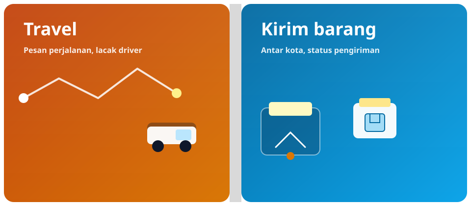

Lacak di peta
Ikuti perjalanan dan koordinasi titik jemput dengan visual yang jelas.
Kalimantan & sekitarnya
Satu platform untuk memesan travel, mengirim barang antar kota, dan berkomunikasi dengan driver dengan alur yang jelas — dibangun agar mobilitas dan logistik harian lebih mudah diakses.
Gambaran singkat dua layanan utama — seperti lipatan brosur — supaya pengunjung langsung memahami nilai Traka.

Lacak di peta, alur dalam satu aplikasi, dan fokus kebutuhan wilayah.
Ikuti perjalanan dan koordinasi titik jemput dengan visual yang jelas.
Pesan travel, atur kirim barang, dan chat dengan driver tanpa pindah aplikasi lain.
Dioptimalkan untuk pola rute dan kebiasaan perjalanan di Kalimantan, dengan arah pengembangan ke layanan dan wilayah lain secara bertahap.
Traka adalah aplikasi seluler yang mempertemukan penumpang dan driver travel, sekaligus mendukung alur kirim barang dengan pelacakan dan komunikasi di dalam aplikasi. Fokus awal pengembangan adalah kebutuhan perjalanan dan pengiriman di wilayah Kalimantan, dengan ruang untuk berkembang ke rute dan layanan lain.
Traka tidak menyimpan dana pengguna di platform: kesepakatan harga dan pembayaran terjadi langsung antara penumpang, pengirim, dan driver, sesuai praktik yang dijelaskan di kebijakan privasi dan syarat layanan.
Berikut kemampuan inti yang dirancang untuk penumpang, driver, dan pengguna kirim barang.
Mencari jadwal, memesan perjalanan travel, dan mengelola pesanan dari satu aplikasi.
Mengirim paket antar kota dengan driver terpercaya dan alur order yang terstruktur.
Fitur lacak membantu penumpang dan pihak terkait memantau posisi dan status perjalanan.
Komunikasi langsung dengan driver untuk koordinasi jemputan, rute, dan pengiriman.
Verifikasi identitas dan praktik keamanan untuk mengurangi penyalahgunaan akun dan order fiktif.
Tim operasional dapat memantau pesanan, pengguna, dan pengaturan aplikasi melalui web admin terpisah (akses terbatas).